Embedded Programming · Internet of Things
Outdoor Alzheimer's Patient Tracking System Based on Internet of Things
Published in TELKOMNIKA Telecommunication, Computing, Electronics and Control as "ALZO: an outdoor Alzheimer's patient tracking system using internet of things".
Abstract
Alzheimer's disease attacks brain cells, causing memory and motor-skill loss with no proven cure — though staying active outside the home is known to slow its severity. Patients doing so are usually accompanied by a caregiver, but in cases where they go out alone, they risk getting lost or falling. This project builds a wearable device, worn on the patient's belt or pants, that detects falls and lets the patient request help at the press of a button. When a fall is detected or help is requested, the device sends GPS coordinates to a server, and the caregiver can monitor the patient's location through an Android application.
Background

Alzheimer's affects people worldwide regardless of age — roughly one new case emerges every three seconds. 55 million people had dementia globally in 2019, a figure expected to reach 78 million by 2030 and 139 million by 2050. China, India, South Asia, and the western Asia Pacific contribute the most cases (Alzheimer's Disease International).

In Indonesia specifically, cases rose from 0.39 million in 2017 to 0.46 million in 2020, with 0.52 million projected by 2024 (Statista). With no cure, treatment focuses on therapy and staying active outside the home — which carries its own risks: getting lost, communication difficulty, and falls from declining motor skills.
Focus Group Discussion
Two FGD sessions were held with Alzheimer's caregivers, recruited with help from Alzi (Alzheimer Indonesia). The first covered common problems, patient behavior, and the proposed system in an open session. The second presented the Alzo system in non-technical terms, along with further development and commercialization possibilities.
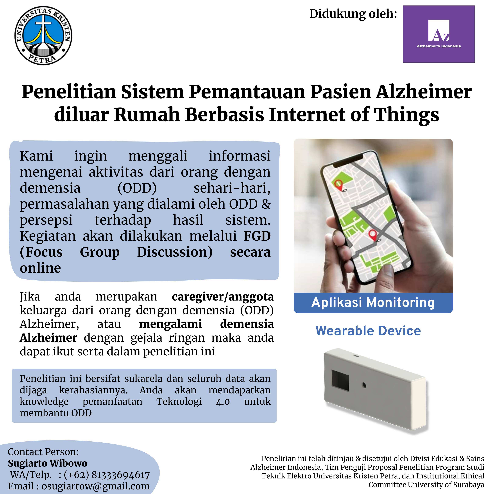
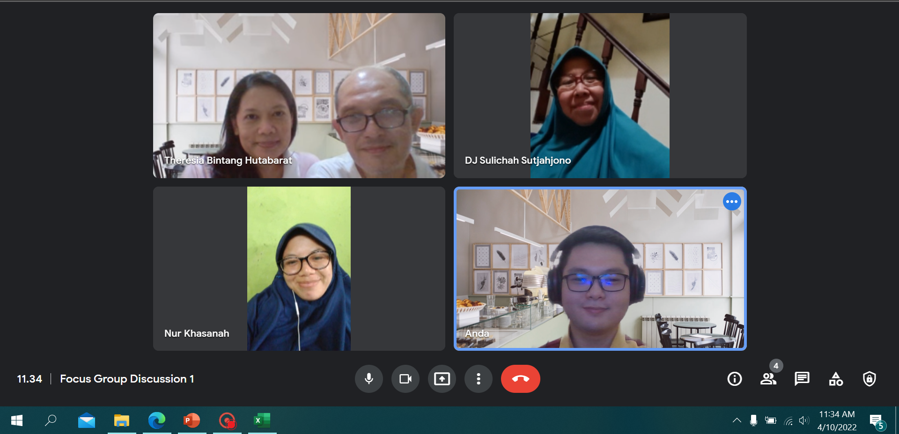
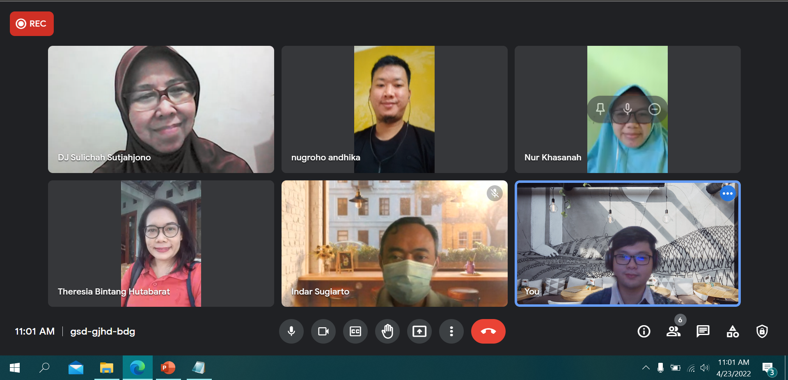
Block Diagram
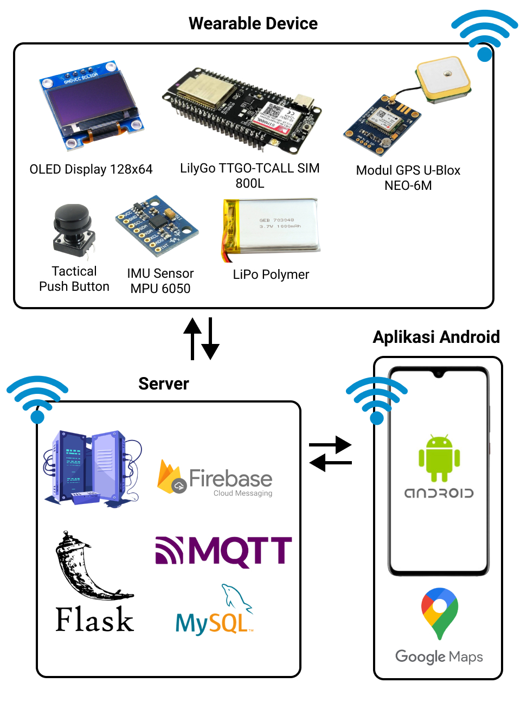
The system has three parts: a wearable device tracking patient activity, a server handling the database and data exchange, and an Android app for caregiver monitoring. The wearable runs an ESP32 MCU with a SIM800L radio coprocessor (2G), GPS module, push button, IMU (MPU6050), and a LiPo battery. The server uses Flask, MySQL, an MQTT broker, and Firebase for push notifications. The Android client uses the Google Maps API to visualize patient and caregiver location.
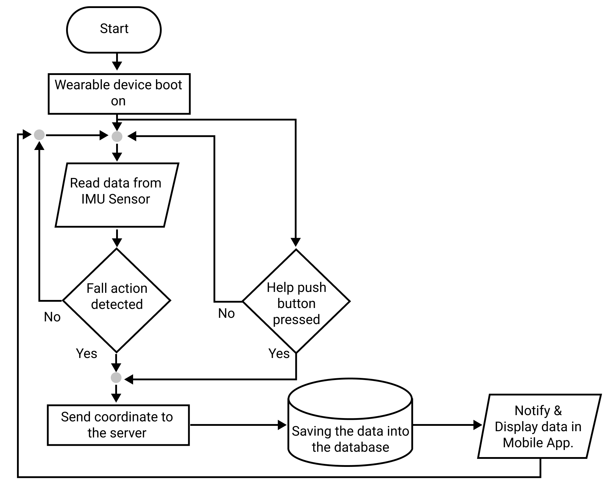
On boot, the wearable runs fall-detection on IMU data; if triggered (or the help button is pressed), it sends GPS coordinates to the server over MQTT via 2G. The server saves the event and notifies the Android client, where the caregiver sees the incident, tracks the patient's location, and gets real-time directions to their last known position.
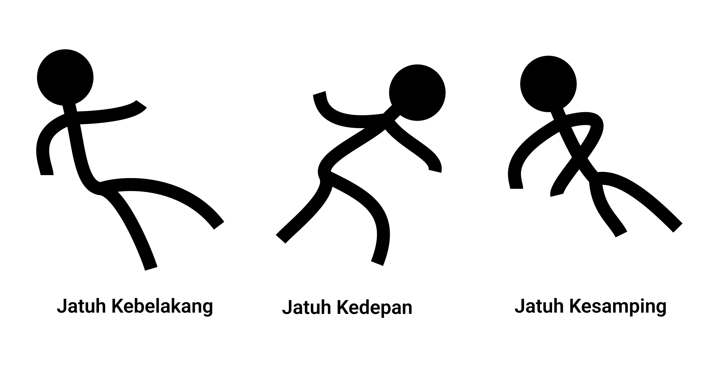
To distinguish normal activity from falls, motion data was recorded across activities — walking, jumping, cycling, sitting, jogging, bowing, squatting — and four fall directions: forward, backward, left, and right.
Experiments
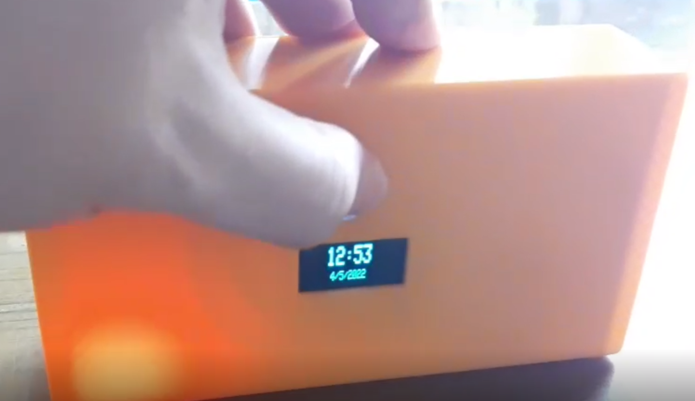
The first test simulated a lost patient: triggering the help button, then verifying the server database entry, the caregiver notification, and location tracking in the Android app.
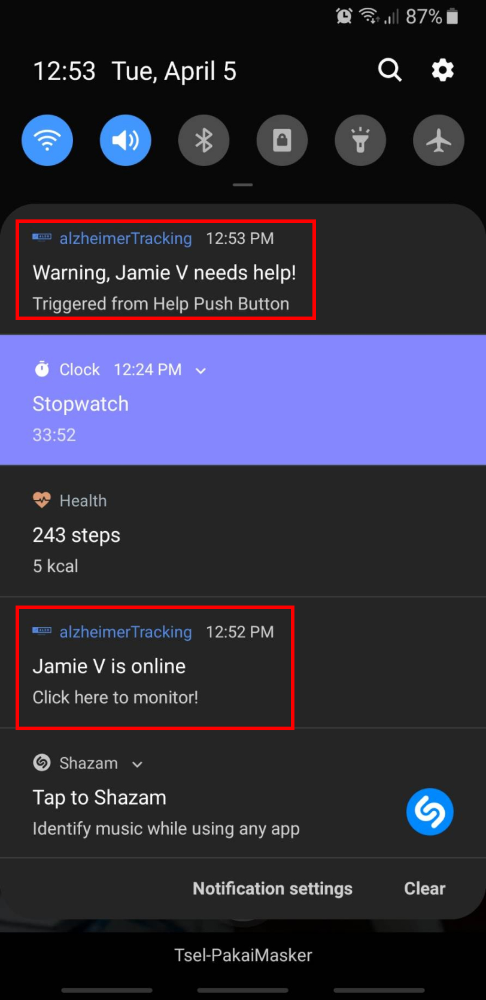
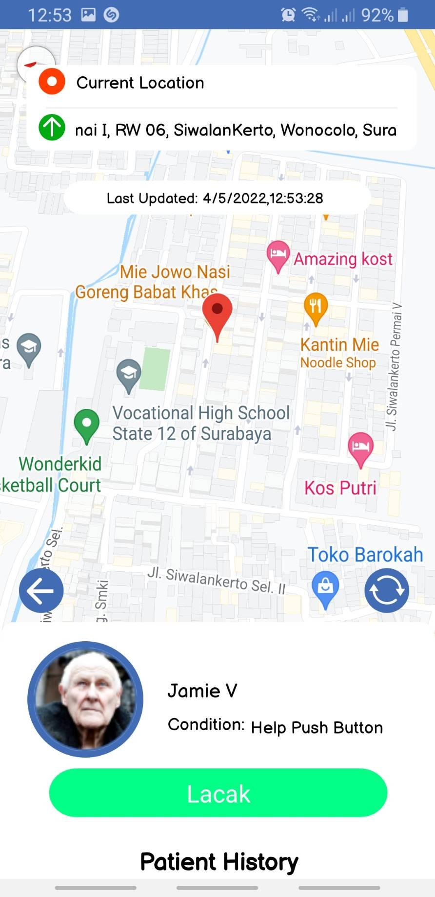
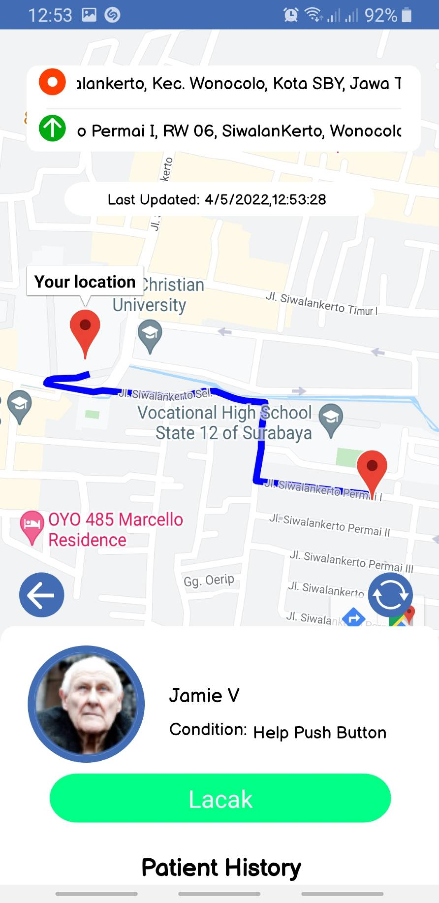
The second test validated fall detection during daily activity and staged falls: no false positives on normal activity, and every fall action was correctly recognized.
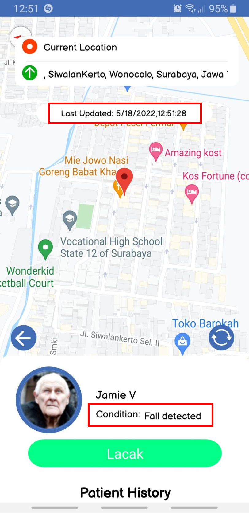
Acknowledgements
This research was conducted with the help of:
- Dr. Indar Sugiarto — thesis supervisor
- The Institutional Ethical Committee, University of Surabaya — ethical clearance
- Alzi (Alzheimer Indonesia) — volunteer outreach
- Institute of Research and Community Outreach, Petra Christian University — funding
- Volunteers Mr. Nugroho, Mrs. Nur, Mrs. Theresia, Mrs. Imelda, and Mrs. Wiryanti, for sharing their experiences and feedback on Alzo